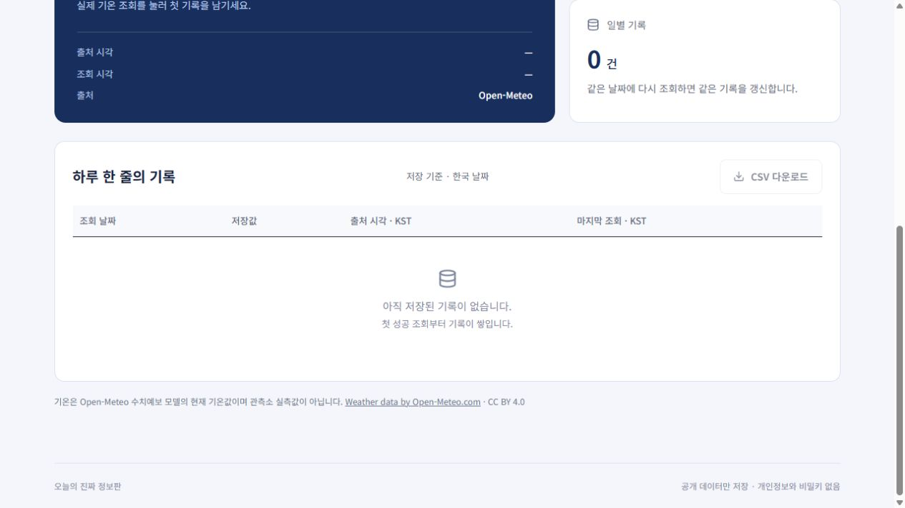

ALEPH · T05 · 2026. 10. 02
대화가 바뀌어도,
기록은 이어집니다.
오늘의 진짜 정보판에 실제 저장 기록 CSV 다운로드를 추가한 순차 작업 보고서.
고정 검사 10 / 10저장소 + 인수인계로 계속브라우저 보완 검증 완료
이름을 가린 비교
X는 AI A, Y는 AI B의 순서 표시입니다. 같은 기능을 순차로 이어 했으며 시작 상태가 달라 모델 우열 실험으로 해석하지 않습니다. Y의 시간·호출 수는 반환 자료의 근사 집계입니다. 검사 설계·자료 확보와 중단 이후 포장·배포·보완 검증은 AI 작업 측정 밖에 있습니다.
작업이 이어진 근거
- 검사 10개와 상한을 구현 전에 고정했습니다. 각 검사에 ID·입력·기대 결과가 있습니다.
- A: 10:09:10.746 → 10:10:00.040 KST. 시작
ca65a36325938224aa9d71fbbe53204fde70e8be, 종료 60d9d5b5d9cc9944bf3195df8c3d8db6bedfaaf2. 첫 검사 1/10, 핵심 변환 후 8/10. - 목표·현재 상태·버전·실행 명령·통과 검사·남은 문제·다음 행동 및 금지 범위를 문서로 인계했습니다. B에는 원문 대화 대신 저장소와 문서를 제공했습니다.
- B: 반환 자료 기준 10:15:18 → 10:18:14 KST. A 종료 커밋에서 시작하고
956b878386123520b0f6f7fdfa4594f04b15980f에서 종료. 첫 편집에서 정규식 이스케이프 오류(1/10), 수정 뒤 두 회차 10/10. - 반환 소스의 Git 종료 ID를 확인했고, 검사와 잠금파일 내용을 대조했습니다. 최종 독립 재검증도 10/10입니다.
두 AI의 정확한 서비스 정보는 실행 증거 JSON에 있습니다. B 모델명은 반환 자료에 기록된 명칭이며 독립 확인하지 않았습니다.
고정 검사 10개
검사 파일 SHA-256(LF): c81933930ace81cca469130d037ea218dc1acce4c7d15628c5eb781cad0ea2ee. 내용 변경 없음. F10은 실제 앱 SQL을 로컬 SQLite에서 실행하며 운영 D1 검증과 구분합니다.
브라우저에서 확인한 것
- B 보고: CSV 버튼 연결, UTF-8 BOM, 헤더와 실제 공개 기록 2건, replay 비활성화, 다운로드 중 추가 조회 없음, object URL 해제.
- 추가 검증: 빈 목록에서 CSV 버튼 비활성화, 저장 기록 2건에서는 활성화, 조회 처리 중에는 비활성화.
추가 검증은 반환된 빌드의 화면 로직에 로컬 시험 프록시로 빈 목록·지연 응답을 제공해 재현했습니다. 시험용 주소 치환은 테스트 전달 계층에만 적용했고 배포 소스를 변경하지 않았습니다. 운영 기록을 갱신하지 않았으며 실제 날짜 증거로 사용하지 않습니다.

로컬 시험: 빈 목록에서는 다운로드할 수 없습니다.
짧은 확인 방법
- ① 어디로 가나요?
- 이 보고서와 정보판, 고정 소스를 엽니다.
- ② 무엇을 하나요? (3단계)
- 1. 저장된 실제 기록을 확인합니다.
2. CSV 다운로드 후 날짜·기온·단위·출처를 화면과 대조합니다.
3. 고정 검사와 A → 인계 → B 시작/종료 기록을 확인합니다. - ③ 무엇이 보이면 통과인가요?
- CSV의 공개 8열과 한글·숫자·날짜가 일치하고, 합성 모드에서는 비활성화되며, 고정 검사 10개가 PASS입니다.
- ④ 안 될 때 무엇이 보이나요?
- 빈 목록·합성 모드·조회 처리 중에는 다운로드가 비활성화됩니다. 조회 실패는 원인과 재시도 안내를 표시하고 마지막 정상 기록을 보존합니다.
AI와 나의 판단
AI에게 맡긴 일: 고정 검사 설계, CSV 구현, 인수인계, 실행·브라우저 검증과 보고서 정리.
내가 직접 판단한 일: CSV 다운로드 개선으로 진행하는 데 동의했고, 이어받을 AI B로 Claude를 선택했습니다.
AI 제안을 따르지 않은 일: 제공된 대화에서 거절 사례가 확인되지 않았습니다. 거절한 일이 없었던 이유나 실제 다른 사례는 본인이 제출 전에 확인·보완해야 합니다.
다음 작업의 도구 선택 기준 초안: 코드 실행과 파일 반환이 가능하고, 고정 검사·버전·실행 명령으로 작업을 재현할 수 있는 도구를 먼저 선택합니다. 이 기준의 최종 채택 여부는 본인이 확인합니다.